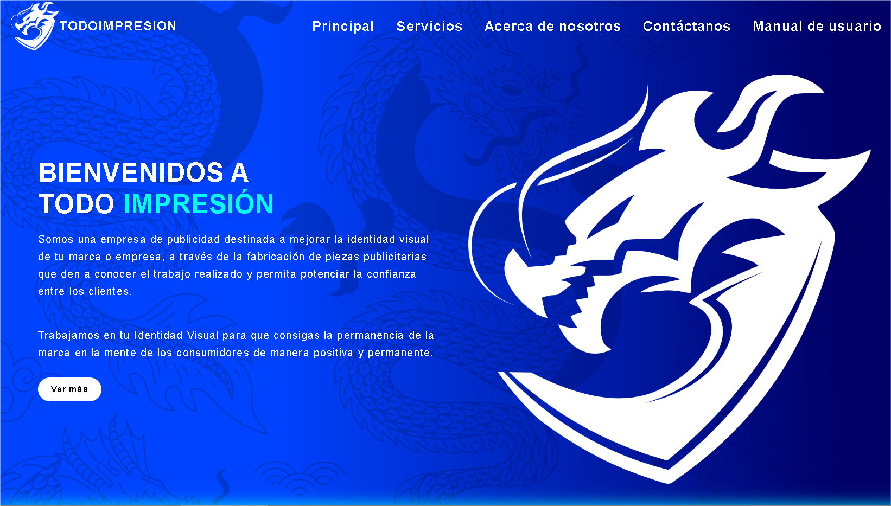
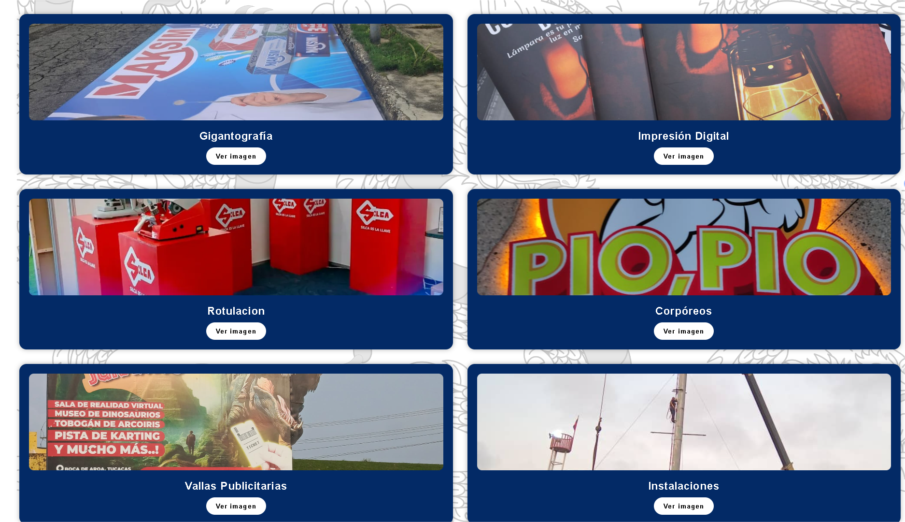
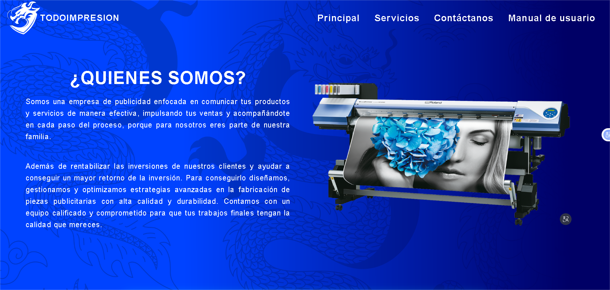
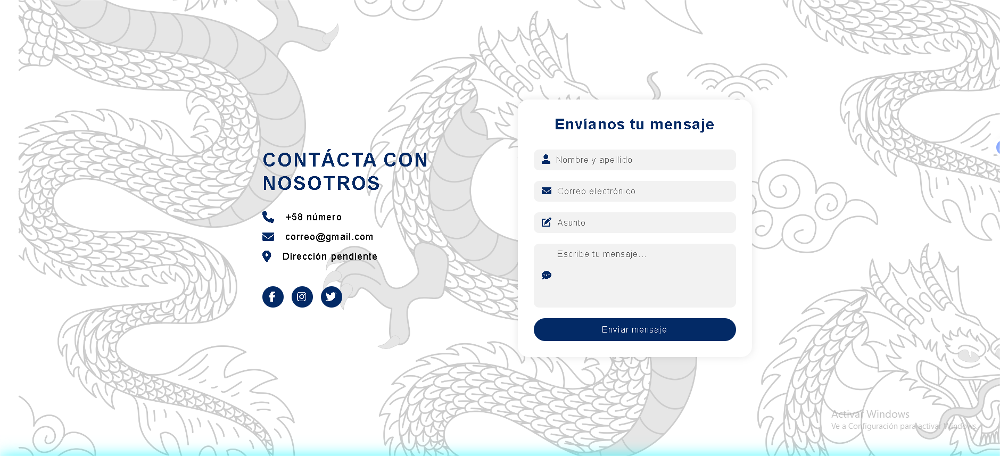

TODOIMPRESION
Introducción
El presente manual de usuario tiene como funcionalidad dar a conocer de manera detallada y sencilla la estructura del sitio web de TODOIMPRESION para que cualquier usuario pueda sacar el máximo partido de la misma. El sitio fue diseñado para que cada quien pueda, de una forma intuitiva, realizar búsquedas eficientes dentro del mismo
Objetivos
Brindar una descripción clara y detallada sobre el funcionamiento y uso de los distintos elementos del sitio web para guiar al usuario en la búsqueda de información sobre la empresa .
Diseño de Interfaz
El diseño debe garantizar que las interfaces y espacios interactivos con los que se relacionarán los usuarios, estén a la altura de sus necesidades y expectativas.
- Analizar y evaluar las necesidades de los usuarios, enfocándose principalmente en las características interactivas de la página.
- Definir el comportamiento que tendrá la interfaz en la interacción con los usuarios.
Cabecera del Sitio Web
La cabecera del sitio web cuenta con una barra de navegación totalmente funcional que se encarga de redirigir a las diferentes paginas principal, servicios, acerca de nosotros,contactanos,manual de usuario contando con modelo responsivo para el uso del sitio web en celulares colocando cada uno de los links dentro de un menú de hamburguesa cuenta también con el logo de la empresa en su lado izquierdo este teniendo una pequeña animación de agrandamiento al pasar el mouse por encima también el cursor del mouse se vuelve puntero indicando que es funcional para dar click al presionar click redirije a la página principal del sitio web.
Partes del Sitio Web
Principal

La página principal cuenta con un diseño sencillo donde se da la bievenenida al sitio web seguidamente se da una pequeña definicion a lo que se dedica la empresa y luego un boton de ver mas que da redireccion a la página "Servicios".
Servicios

la página de servicios cuenta con un diseño más elaborado diseñado para mostrar los servicios que ofrecen a travéz de tarjetas que tienen botones para poder ver de mejor manera las imágenes.
Acerca de nosotros


La página de acerca de nosotros muestra informacion relevante de la empresa sobre quienes son, su mision,mision y la ubicacion donde cualquier persona puede ir para cualquier trabajo de impresion que necesite hacer
Contactanos

La página de contacto hay un diseño simple pero muy estilizado de un formulario de contacto con la empresa donde también hay iconos de las redes sociales de la empresa (facebook, instagram, tiktok)
.png)
El pie de página tiene un diseño sencillo donde hay logos de distintas redes sociales con la cual la unica funcional por ahora es instagram abajo de eso esta el aviso legal de derechos de autor.